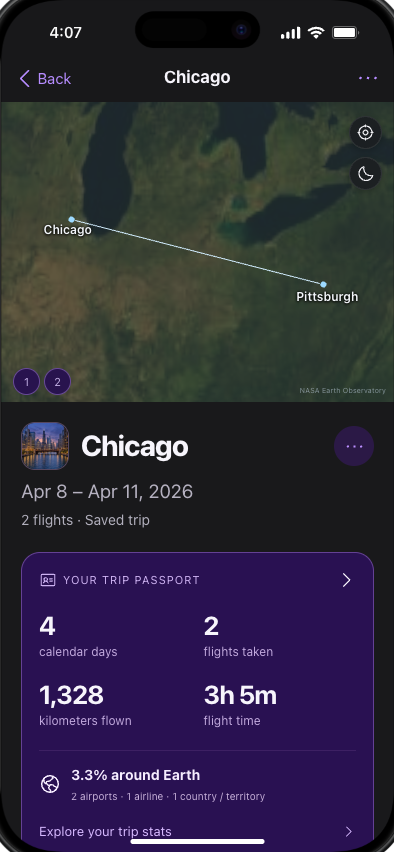
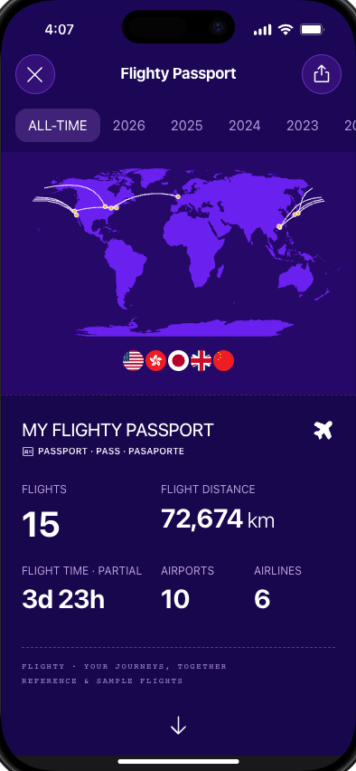

Flighty.
From flights
to journeys.
Making a frequent flyer's history feel personal—and their mileage progress easier to understand.
Interactive web prototype · No sign-in required

The flight ends.
The journey doesn't.
I wanted to explore what Flighty could do for a frequent flyer between flights.
The reference experience makes an individual flight and its details easy to explore. Passport turns those records into a bigger picture of travel. My question was: could that history also help me remember a whole trip and understand progress across my loyalty accounts?
A Tokyo journey can involve several flight legs, different airlines, and a train between airports. A mileage goal has a different set of rules again. I designed this concept around those two needs, while keeping the next flight at the center of My Flights.
Starting point: my Flighty screenshots and flight-detail walkthroughs. These are design hypotheses from that review, not findings from a customer research study.
Two additions.
A familiar foundation.
Travel history
Past Flights lists individual legs, with sorting and detailed flight information.
Trips brings related legs together, with destination thumbnails, notes, and a review step before saving.
Travel statistics
Passport summarizes flights across a year or all time.
Trip summaries add a focused route view and a smaller Passport for one journey.
Mileage clarity
Flight details and Passport show the geographic distance traveled.
Mileage & status adds program-specific goals, distinguishing distance, redeemable rewards, and qualifying progress.
Navigation
My Flights, Friends, and Passport anchor the experience.
Those tabs stay. Trips sits within Past Flights; loyalty progress is accessible from My Flights.
Comparison describes the supplied reference screens, not an exhaustive audit of every feature in the current Flighty app.

Remember Tokyo.
Keep every leg.
A destination is a better memory cue than a flight number.
City thumbnails make trips recognizable. A focused globe frames the selected route, while a summary connects distance, travel days, and flight time to the journey.
- Suggest, then confirm. Review flight membership before a group becomes a saved trip.
- Leave gaps visible. A missing connection can be a train, car, or ferry. The prototype does not invent a flight.
- Make it personal. Rename a trip, add notes, or mark it Work or Personal. Split and merge actions include Undo.

Know what counts
toward the goal.
A bigger number is only useful if I know what it means.
I separated the loyalty program from the operating airline, and redeemable rewards from qualifying progress. ANA, United, and British Airways examples let visitors explore different account structures.
- See the whole requirement. The ANA example includes both total Premium Points and the ANA Group counter.
- Separate earned from expected. Posted credit is already in the balance. Pending and booked estimates remain visible separately.
- Keep the goal close. Pin a program to My Flights and edit its target or deadline without burying the next flight.
Accounts are sample or manually entered data. United and British Airways targets are illustrative personal goals; the demo does not connect to loyalty accounts or guarantee eligibility.

Extend the experience.
Keep its identity.
I brought the all-time Passport closer to the reference app: a purple cover, geographic routes, prominent totals, and deeper statistics below.
The app keeps dark surfaces, compact flight rows, and clear operational status colors. The new trip cards reuse that language. This case study uses my portfolio's monochrome layout and pixel labels, giving the project a home without changing the prototype's character.
Totals come from the demo's flight records. Missing data stays visible as partial coverage, rather than becoming a misleading zero.
Take it for a spin.
Start with the next flight, explore a mileage goal, then open Passport and switch Past Flights to Trips. Review Japan to see why grouping needs a human decision.
Open demo full screen ↗Your next flight is the starting point.
Load the interactive phone preview here, or open it full screen on your device.
Loads the 3D globe and app assets only when you choose.
Best with a modern browser and WebGL. Edits stay in this browser. Sample flight lookup is available; live flight feeds, account sync, and friend sharing are not connected.
Trust before
more features.
The hardest part was deciding what the app should not assume.
Trip grouping must be reversible. A surface transfer must not become a fake flight. Booked mileage must not look earned. Those constraints shaped the interactions as much as the visual design.
What I checked
Browser walkthroughs covered the core trip, mileage, and Passport flows. Automated checks covered grouping logic, statistics, and the mobile runtime. This verifies prototype behavior; it does not establish customer impact.
What I would test next
Ask frequent flyers to correct a suggested trip, explain how much qualifying progress they have earned, and find a past journey. Measure correction effort, comprehension errors, and retrieval time against the reference flow before claiming improvement.
Independent design exploration, not an official Flighty product or an affiliated project. Built with AI assistance for implementation and destination imagery; scope and design choices are documented in the source.
Explore the source on GitHub ↗